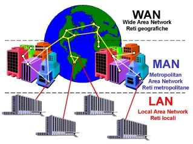
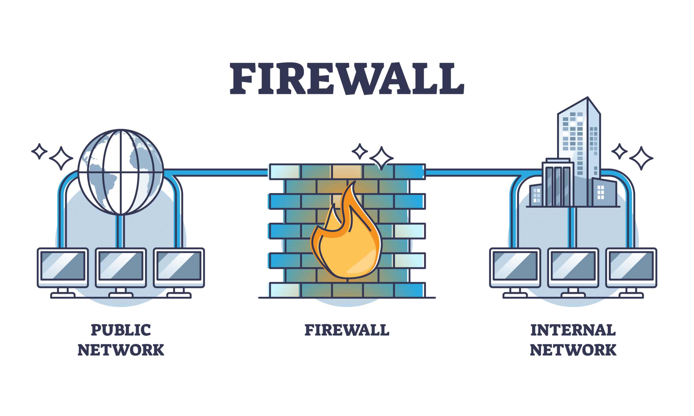
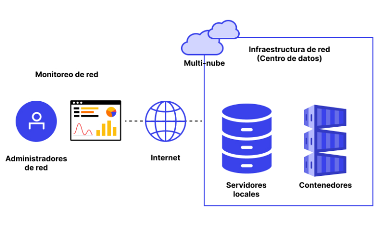

Las redes de computadoras son sistemas que permiten la interconexión de múltiples dispositivos para compartir recursos, datos y servicios. Estas redes pueden ser locales (LAN), metropolitanas (MAN) o extensas (WAN), dependiendo de la cobertura geográfica. El estudio de redes abarca desde la configuración física de los equipos hasta los protocolos que regulan la comunicación.
Comprender los protocolos de red es vital para asegurar que la información viaje de manera eficiente y segura entre los nodos. Protocolos como TCP/IP, UDP, HTTP, FTP, y SMTP definen cómo se envían, reciben y gestionan los datos. La arquitectura en capas, como la del modelo OSI, ayuda a dividir las funciones en niveles manejables y estandarizados.

Las redes modernas incluyen tecnologías inalámbricas como Wi-Fi y 4G/5G, que amplían la conectividad sin cables físicos. Además, conceptos como la seguridad en redes, firewall, VPN y detección de intrusos son esenciales para proteger la integridad y privacidad de la información.
El monitoreo y diagnóstico de redes permiten identificar problemas, optimizar el rendimiento y garantizar la disponibilidad del servicio. Los administradores de red deben estar capacitados para manejar estas tareas, utilizando herramientas y técnicas especializadas.
| Dispositivo | Dirección IP | Máscara de Subred | Puerta de Enlace |
|---|---|---|---|
| PC Oficina | 192.168.1.10 | 255.255.255.0 | 192.168.1.1 |
| Servidor Web | 192.168.1.20 | 255.255.255.0 | 192.168.1.1 |